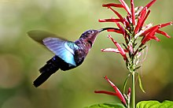

The
Hummingbird
Species
The
Hummingbird
Species
Common Name: Hummingbirds
Scientific Name: Calypte costae
Type: Birds
Diet: Omnivore
Average life span in The Wild: 3 - 5 years
Size: 2 to 5 inches
Weight: 0.07 to 0.24 ounces
Hummingbirds are found only in the Western Hemisphere, with almost half the species living in the "equatorial
belt" between 10 degrees north and south of the equator.
The hummingbird family is very large, with over 330 species and 115 genera, mostly south of the U.S.
Hummingbirds are found only in the Western Hemisphere,
with almost half the species living in the
"equatorial belt" between 10 degrees north and south of the equator.
Hummingbirds comprise the family Trochilidae, among the smallest of birds, with most species measuring in the
3"-5" range.
Hummingbirds spend the winter in Central America or Mexico, and migrate north to their breeding grounds in the
southern U.S.
as early as February, and to areas further north later in the spring. The first arrivals in
spring are usually males.
Fewer than two dozen species venture into the U.S. and Canada, and only a few species remain year-round.

Male has a deep violet head and gorget extending far down the sides of the neck.
Female has white throat and
underparts, sometimes with some violet feathers.
Read more about hummingbirds on here
https://en.wikipedia.org/wiki/Hummingbird